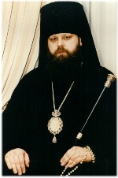

THE NATIVITY EPISTLE OF HIS EXCELLENCY MERCURIUS, BISHOP OF ZARAISK, ADMINISTRATOR OF THE PATRIARCHAL PARISHES IN THE USA
Venerable Fathers! Dear Brothers and Sisters!
Time and again the mercy of God opens wide before us the gates of time. Soon, offering thanksgiving to God, we will enter the New Year, the second year of the third millenium. And every time, crossing this threshold of time, we look for renewal of our life, for the new strength and the reinvigorated perception of reality. Who has the power to renew us? Indeed, this is possible - only to God!
Today, as in the past, human nature, wounded with sin, cannot restore itself and the outward world to the state of the primeval beauty and glory without the Divine help of its Creator. As before, creation is inclined to evil and death. And if God would not have entered this human life and changed it by His Divine Love, the world would not have found strength to go on living.
With Christ the Savior's coming into the world we have acquired a unique ability to renew ourselves in the Lord, and through ourselves and our communion with God - the surrounding world. When our heart is open to meet God, He enters it and transfigures our life. By His coming He opens the depths of our souls, hidden talents and abilities, restores to life the springs of love and mercy that are running dry, opens the eyes of our souls where the light shines in the darkness and the darkness does not comprehend it (John 1:5).
Humanity was always longing for this encounter with God. In the Gospel we find an inspiring example of the wise men who came from the East - the Magi, who devoted their whole lives and their whole knowledge to the search for God. Seeing the star in the Orient, surmounting many obstacles, they rushed to the Bethlehem cave to give the due honor to the incarnate Divine Child Christ. No less remarkable is the fact that they 'fell down and worshiped Him And when they had opened their treasures, they presented the gifts to Him: gold, frankincense, and myrrh. Then, being divinely warned in a dream that they should not return to Herod, they departed for their own country another way" (Mt. 2:11-12).
Within the Church walls we define our live not so much according to astronomic time, but rather according to liturgical time. This special kind of time makes us not the exterior observers of the Sacred history, but its living participants. This is why, time and again, Christ the Savior indeed is born for us. And it is up to us to rush toward the star of Bethlehem and the manger of the Divine Child; to be able to open before the Lord the treasure of our souls and, having encountered God, to choose not to return to the Godless life but to follow the "other path" - the path indicated for us by our Savior.
Many can ask: where do we find that star of Bethlehem to show us the path leading to God? The sky of our life is stellated with the stars like this. The two thousand year old experience of the Orthodox Church is right before our eyes. Here, within the Church walls, people were finding God, here the spiritual renewal was taking place, here they were revealing to the world the Living and Acting God. And on the contrary - outside of the Church everything bereft of God had proved itself dead and pernicious. During the past year the horror and pain seized our hearts when we saw at first hand the evil that a Godless person bears within oneself ...
This is why it is especially important for us, the Christians, to remember the great calling to which the Lord has called us. This calling consists in the service to the world with our love.
During these holy days I am congratulating you, my dear ones, with the JOYOUS Feast of the Nativity of Christ and the coming New Year! Remembering you in my prayers, today I am begging God, Who 'for us men andfor our salvadon came down from heaven", to protect you and your kin with His peace, preserve you from all evil, from the assaults of the enemies both spiritual and material, and to strengthen you in your labors for the glory of God and our Mother, the Orthodox Church of Russia. May the God of peace and love be with you always!

+ Mercurius, Bishop of Zaraisk, Administrator of the Patriarchal Parishes in the USANativity of Christ 2001-2002. New York.
(Various typographical and grammatical errors corrected - webmaster)
We confidently recommend our web service provider, Orthodox Internet Services: excellent personal customer service, a fast and reliable server, excellent spam filtering, and an easy to use comprehensive control panel.